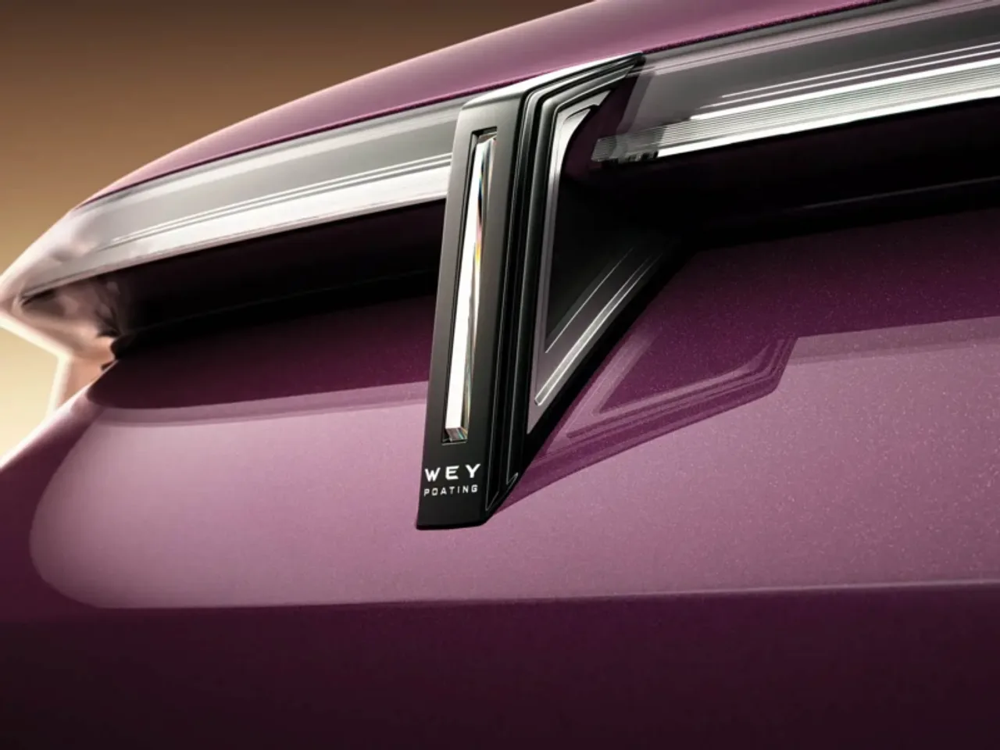
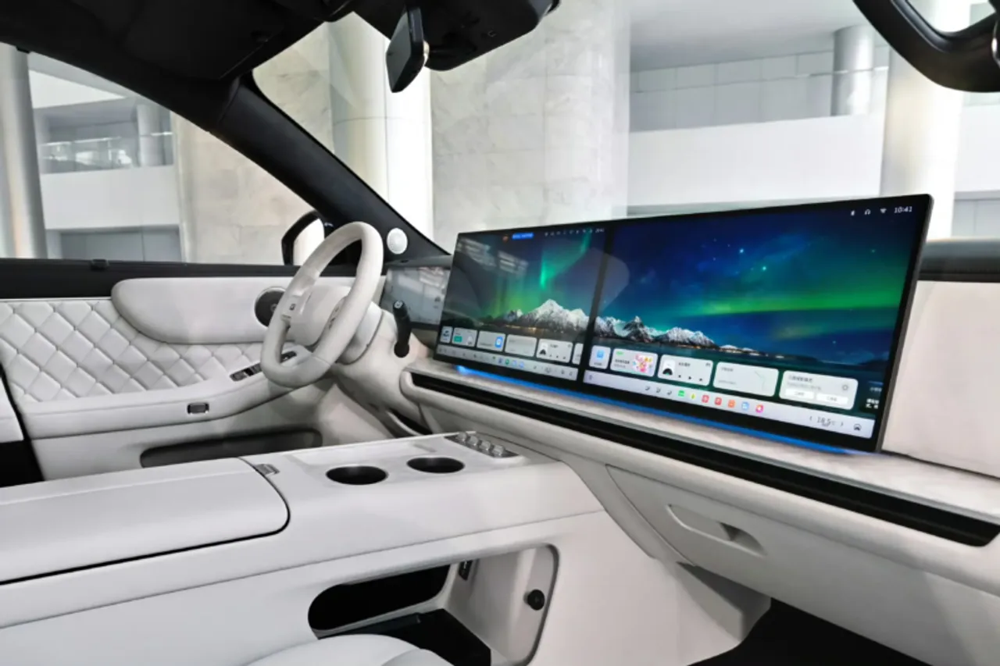

▲ GWM 위(Wey) V9X — GWM One 플랫폼 기반의 6인승 플래그십 SUV로, "AI 파워드 럭셔리"를 표방한다 (사진: CarNewsChina 제공)
GWM의 프리미엄 브랜드 위(Wey)가 신형 플래그십 SUV V9X를 공식 출시했습니다. GWM의 새 통합 플랫폼 'GWM One'을 처음 적용한 모델로, "AI 파워드 럭셔리 6인승 플래그십"이라는 수식어를 내걸었습니다. 같은 GWM 산하의 하발 H10이 4천만원대 가성비로 승부한다면, 위 V9X는 완전히 다른 방향, 즉 프리미엄 포지셔닝으로 향합니다.
1. 전장 5.3m, 6인승으로만 나온 이유
V9X의 차체는 전장 5,299mm, 전폭 2,025mm, 전고 1,825mm에 휠베이스 3,150mm에 달합니다. 국내 대형 SUV들과 비교해도 한 체급 위인 크기입니다. 그런데 좌석은 처음부터 6인승으로만 제공됩니다. 이는 하발 H10이 5인승·6인승을 함께 제공하며 실용성을 강조하는 것과 대조적입니다. V9X는 애초에 '많이 태우는 차'가 아니라 '적게 태우고 편안하게 모시는 차'로 설계된 셈입니다.

▲ 위 V9X 후면 디테일 — '갤럭시' 스루타입 LED 라이트바 중앙에 입체 발광 로고를 배치한 디자인이다 (사진: CarNewsChina 제공)
2. 순수전기 470km, 복합 1,700km — 숫자가 다른 이유
V9X는 플러그인하이브리드 구조로, 순수 전기 주행거리는 최대 470km에 달합니다. 여기에 엔진까지 더한 복합 주행거리는 최대 1,700km까지 늘어납니다. 순수 전기 주행거리 자체도 상당히 긴 편인데, 여기에 800볼트(V) 고전압 아키텍처를 적용해 급속충전 속도까지 함께 끌어올렸습니다. 800V 아키텍처는 현재 프리미엄 전기차 시장에서도 최상위 기술로 꼽히는 사양으로, GWM이 이 플래그십 모델에 자사 최신 전동화 기술을 아낌없이 투입했다는 뜻입니다.
| 항목 | 사양 |
|---|---|
| 전장·전폭·전고 | 5,299 × 2,025 × 1,825mm |
| 휠베이스 | 3,150mm |
| 공차중량 | 2,805~2,840kg |
| 듀얼모터 출력 | 220kW + 320kW |
| 최고속도 | 220km/h |
| 순수전기 주행거리 | 최대 470km |
| 복합 주행거리 | 최대 1,700km |
| 전장 아키텍처 | 800V 고전압 |

▲ 위 V9X 실내 — 17.3인치 듀얼 스크린(센터·조수석)과 29인치 HUD, 무중력 시트를 갖췄다 (사진: CarNewsChina 제공)
3. 별 모양 그릴, 은하수 라이트바 — 중국풍 디자인 언어
V9X의 디자인은 중국 전통 건축 미학에서 영감을 받았다고 소개됩니다. 막힌 형태의 '스타링(Star-ring)' 그릴과, 라이트가 가로로 관통하는 '갤럭시(Galaxy)' 라이트바가 대표적입니다. 라이트바 중앙에는 입체적으로 발광하는 3D 로고가 배치돼 브랜드 정체성을 강조합니다. 서구 프리미엄 브랜드의 문법을 따르기보다, 중국 소비자에게 익숙한 미학적 코드를 전면에 내세운 것으로 해석됩니다.
4. 폐쇄형 듀얼체임버 에어서스펜션, 무중력 시트
섀시·편의 사양에서도 플래그십다운 구성이 돋보입니다. 기본 사양으로 폐쇄형 듀얼체임버 에어서스펜션을 갖췄고, 대각도 후륜조향 기능까지 지원해 대형 SUV임에도 좁은 공간에서의 회전 반경을 줄일 수 있습니다. 실내에는 12.3인치 계기판과 센터·조수석용 17.3인치 듀얼 스크린, 29인치 HUD가 들어가며, 무중력 시트(제로 그래비티 시트)까지 적용돼 장거리 이동 시 탑승자의 피로를 줄이는 데 초점을 맞췄습니다.
5. 하발과는 다른 길, GWM의 투트랙 전략
같은 날 비슷한 시기에 공개된 하발 H10과 위 V9X는 GWM이 SUV 시장을 공략하는 두 가지 상반된 전략을 보여줍니다. 하발이 '이 가격에 이 스펙'이라는 가성비로 대중 시장을 겨냥한다면, 위는 크기·기술·디자인 모든 면에서 상급 포지셔닝을 노립니다. 실제로 해외 진출 후보로도 V9X가 하발 H10보다 우선 거론되는 것으로 알려져 있어, GWM이 프리미엄 브랜드 이미지 구축에 V9X를 앞세우려는 의도를 짐작할 수 있습니다. 아직 배터리 용량과 정확한 가격은 공개되지 않았지만, GWM의 글로벌 전략에서 이 차가 어떤 역할을 맡을지는 앞으로 지켜볼 대목입니다.